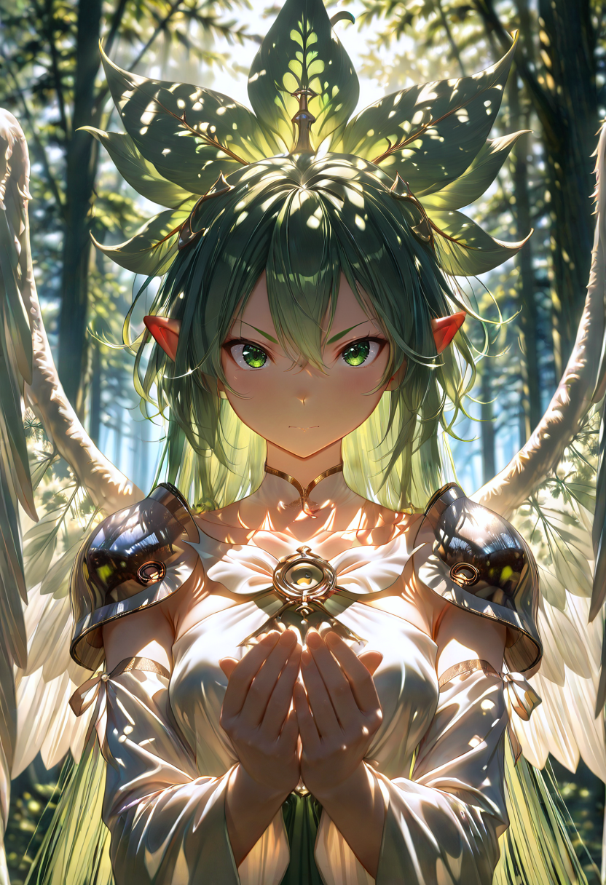

The Second Chance
The Empire of the Forgotten is a society unlike any other , populated entirely by the undead, the resurrected, and a mosaic of living immigrants who have found refuge within its walls. Their origins are lost in the mists of time, as if the nation itself emerged from a collective memory rejected by others.
The beating heart of their culture is the motto: "The Beauty in Living." Undeath here is not a static curse, but a desperate and precious opportunity. The Empire maintains active diplomatic relations with all factions, earning respect through countless acts of charity and support for struggling peoples.
Tactical Doctrine
On the battlefield, the Forgotten fight not out of hatred, but out of the most primal instinct known to any living soul: the will to survive. Their forces blend the tireless endurance of the undead with the grace of their elven lineage and the ferocity of their valkyrie blood , a combination forged by Malicott herself to defy the very laws of life and death.